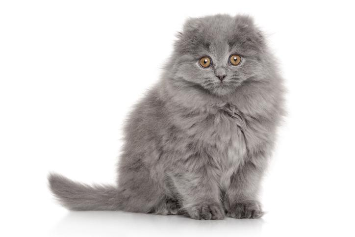

La raza de gatos highland fold o scottish fold de pelo largo proviene de Escocia, una región del Reino Unido. Susie fue la primera gata conocida con el gen fold de las orejas plegadas debido a una mutación genética espontánea. Dos años después, esta gatita tuvo una camada en la que alguna de sus crías presentaba la misma característica en las orejas. A este gen se le denominó "fold" y se determinó que es un gen dominante responsable del permanente pliegue o doblamiento de las orejas a las tres semanas de vida. En este momento nació la raza scottish fold y fue comenzando un programa de diferentes cruces con otras razas, apareciendo la raza highland fold cuando se cruzaron con gatos de raza persa. Además, se comprobó que al cruzar dos gatos homocigotos para el gen fold se producían problemas genéticos graves. A día de hoy, solo se permiten cruces con el americano y el británico de pelo corto. La popularidad de estas razas se hizo mucho más importante en Estados Unidos que en el Reino Unido, donde desarrollaron la raza hasta el gato que conocemos hoy en día.
Son gatos fuertes, robustos, musculados y de tamaño mediano. Los machos pueden pesar entre 4 y 6 kg y las hembras entre 3 y 5 kg, midiendo ambos entre 30 y 35 cm. Aunque la principal característica del highland fol es la apariencia de sus orejas, cuenta con otros rasgos igualmente destacables. Así, entre sus características físicas destacan:
Cabeza redonda, grande y ancha.
Barbilla fuerte.
Mejillas gruesas que hacen la cara muy redondeada.
Ojos grandes, redondos y de aspecto dulce, pudiendo ser azules, dorados o verdes a juego con su capa.
Nariz ancha, corta y recta, con un perfil caracterizado por presentar una curva delicada.
Orejas con una característica doblez hacia delante, lo más cercanas posibles al cráneo y tienen la punta redondeada.
Extremidades cortas y fuertes con huesos medianos.
Pies fuertes, gruesos y redondeados.
Cola de tamaño mediano y gruesa, con la punta algo redondeada.

Se aceptan todos los posibles, así como todos los patrones. Presenta una buena melena que rodea el cuello.

Son cariñosos, tranquilos e inteligentes, aunque también son independientes y miedosos ante los desconocidos. Su tranquilidad radica en que adoran descansar mientras disfrutan de su hogar, no son muy activos ni inquietos, aunque no rechazarán una dosis de juego. Son pacientes y poco ruidosos. Así mismo, se adaptan bien a las circunstancias, los diferentes tipos de hogares, los niños, nuevos inquilinos y animales. Eso sí, al comienzo suelen ser un poco miedosos y actuar con mucho respeto. Pese a no ser un gato muy dependiente, sabe mostrar muy bien su cariño ante sus cuidadores, siendo un gato muy dulce y familiar.

En esta raza es especialmente importante la limpieza de los oídos, en concreto la aurícula y los pliegues, debido a que el pliegue de sus orejas hace que se tienda a acumular cera, lo que atrae infecciones, parasitaciones y suciedad y llegará a dificultar la audición. Otro aspecto importante a destacar dentro de los cuidados del highland fold es el mantenimiento de su pelo debido a su larga longitud, siendo clave para la prevención de la formación de bolas de pelo. Se debe realizar un cepillado varias veces por semana y en época de muda todos los días para quitar el pelo muerto. Son unos gatos muy tranquilos, por lo que la cantidad de calorías diarias pueden ser menores que las necesarias para un gato de actividad media, pero la dieta debe ser completa y de calidad para asegurar que ingieren todos los nutrientes esenciales en las proporciones adecuadas para prevenir las deficiencias y asegurar la correcta funcionalidad interna del felino.

Pese a ser por lo general un gato sano y fuerte, con una esperanza de vida de 13 a 15 años, el highland fold homocigoto al gen fold, es decir, que presenta los dos alelos del gen, puede presentar malformaciones óseas derivadas del mismo, en concreto una patología conocida como osteocondrodisplasia. Esto ocurre cuando se cruzan dos gatos highland fold y no un highland fold con un americano o británico de pelo corto. Estas malformaciones consisten en acortamiento de las vértebras de la cola y de los pies y manos por acortamiento de sus huesos (metatarsianos, metacarpianos y falanges) e incluso algunos llegan a fusionarse y producir anquilosis de la articulación o falta de movimiento que causa más dolor y cojera aún. En estos casos, la enfermedad varía en cada gato y el tratamiento consistirá en analgésicos, antiinflamatorios no esteroideos y condroprotectores. Sin embargo, si el cruce se ha hecho correctamente, solo deberíamos preocuparnos de las enfermedades que comúnmente pueden afectar a los felinos